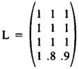
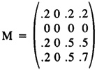
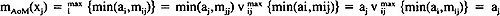
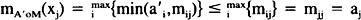

by Abraham Kandel
CRC Press, CRC Press LLC
ISBN: 084934297x Pub Date: 11/01/91
|
|
Fuzzy Expert Systems
by Abraham Kandel CRC Press, CRC Press LLC ISBN: 084934297x Pub Date: 11/01/91 |
| Previous | Table of Contents | Next |
Zadeh51 has also shown that if we interpret the n-set A as a possibility distribution, we can interpret the n-by-p relation R as a conditional possibility distribution: A o R = B; or, in Zadeh’s notation, PZ o PY|X) = PY, where the values of the variables X, Y, and Z have been restricted51 to the fuzzy sets, C, B, and A, and C is also an n-set. Zadeh defines the matrix elements of P(Y|X) as literal fuzzy logical (Lucasiewicz) implications: pij = min(1, 1 - mC(xi) + mB(yj)). This leads to the compositional rule of inference:53 P(X′) o P(Y|X) ≈ P(Y) if X′ ≈ X. Accordingly, the compositional rule of inference is a set-level generalization of modus ponens. It is also a prototypical FAM.
The compositional rule of inference is a compositional rule of fuzzy association. The set pair (A,B) is stored in parallel distributed fashion in the n-by-p relation R. Zadeh’s suggests defining R pointwise with the fuzzy logical implication values rij = min(1,1 - mA(xi) + mB(yj)) so that, in effect, A will push B out of R in a set-level modus ponens. The FAM interpretation of the compositional rule of inference, however, does not dictate a particular selection of R. For instance, if we insist that A compositionally recall B if (A,B) is stored in R, then R cannot be defined by Lucasiewicz implication. Other operators must be sought.
A fuzzy eigenset FAM is an n-by-n relation M that stores an n-set A as an eigenset: A o M = A. This is an autoassociative FAM. An heteroassociative eigenset FAM stores the set pair (A,B), where A is an n-set and B is a p-set, as left/right eigensets of some n-by-p relation M: A o M = B and B o MT = A. A subset FAM maps arbitrary sets A′ ≈ A into subsets of A or B: A′ o M ⊂ A or A′ o MT ⊂ B. Intuitively a subset FAM maps the unknown into the known (stored). The less similar A′ is to A, the closer A′ o M should be to the empty set Ø.
Let us examine the behavior of the Lucasiewicz L used by Zadeh:51 1ij = min(1, 1 - mA(xi) + mB(yj)) = 1 if mA(xi) ≤ mB(yj). Therefore L tends to be widely populated with 1 values and values near 1. Consequently, mB,(yj) = mAoR(yj) ≈ max{mA(x1), . . . , mA(xn)} = H(A) tends to hold. Suppose we store A = (.2 0 .5 .7) and B = (1 .5 .6) in L:

Then A o L = (.7 .7 .7) and B o LT = (1 1 1) as expected, with H(A) = .7 and H(B) = 1. Therefore, L is not an eigenset FAM or a subset FAM. Indeed this behavior suggests abandoning the selection R = L in the compositional rule of inference and, in general, in conditional possibility theory. Theorem 2 following suggests an alternative.
We propose the M = AT o B as a fuzzy eigenset subset FAM. The connection strength mij = min(mA(xi),mB(yj)) is a fuzzy Hebb law23 since it encodes correlation or conjunctive learning. A fuzzy logical implication operator is mij since it satisfies the only one invariant axiom14 of implication — that t(A → B) = 0 if t(A) = 1 and t(B) = 0, or “Truth cannot imply falsehood” as Aristotelian philosophers say.
First, we examine the autoassociative case M = AT o A. The fit vector A = (.2 0 .5 .7) is then stored in the symmetrical relation

Then A o M = A. Consider A′ = (.3 .2 1 .6): A′ o M = (.2 0 .5 .6) A. These properties, in fact, hold in general and follow from two facts: Diagonal(M) = A and M is diagonal-dominant, mij ≤ mjj for all i. This observation allows us to prove that there exist families of fuzzy eigenset subset FAMs.
Theorem 1. If Diagonal(M) = A and M is diagonal dominant, then M is a fuzzy eigenset subset FAM.
Proof. , where “v” stands for max, since aj = mjj ≥ mij ≥ min(ai,mij) for all i. Thus, A o M = A.
Next suppose A′ ~ A. Then . Thus, A′ o M ⊂ A.
Q. E. D.
Accordingly, the matrix Diagonal(A) is always a fuzzy eigenset subset FAM, as well as AT o A. The latter FAM, of course, has greater recall or pattern-completion power.
| Previous | Table of Contents | Next |